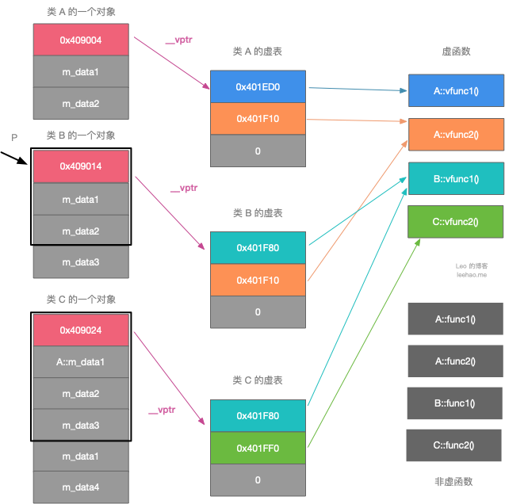

Ch07-C++ 之 keyword
April 25, 2022
virtual
1. 常见用法 #
| 条目 | 说明 |
|---|---|
| 虚析构 | 析构函数设为虚函数主要是为了防止内存泄漏 |
| 虚函数 | 用于实现动态多态 |
| 虚继承 | 用来解决多继承时可能发生对同一父类继承多次而产生的二义性问题 |
| 虚基类 | 多个子类继承自同一个父类时，将继承方式指定为虚继承（继承时加关键字 virtual）即可，此时的父类称为虚基类 |
2. 虚表 (vtable) #
虚表是一个指针数组，其元素是虚函数的指针，每个元素对应一个虚函数的函数指针。需要指出的是，普通的函数即非虚函数，其调用并不需要经过虚表，所以虚表的元素并不包括普通函数的函数指针。每个类包含了虚函数的类都包含一个虚表。所以如果一个基类包含了虚函数，那么其继承类也可调用这些虚函数，换句话说，一个类继承了包含虚函数的基类，那么这个类也拥有自己的虚表。
此外虚函数表位于只读数据段（.rodata），也就是 C++ 内存模型中的常量区。同一类的不同对象共用一张虚函数表，不存在所谓的逻辑上共用，物理上不同的问题。
2.1 代码示例 #
class A {
public:
virtual void vfunc1();
virtual void vfunc2();
void func1();
void func2();
private:
int m_data1, m_data2;
};
class B : public A {
public:
virtual void vfunc1();
void func1();
private:
int m_data3;
};
class C: public B {
public:
virtual void vfunc2();
void func2();
private:
int m_data1, m_data4;
};

由于这三个类都有虚函数，故编译器为每个类都创建了一个虚表，即类 A 的虚表（A vtbl），类 B 的虚表（B vtbl），类 C 的虚表（C vtbl）。类 A，类 B，类 C 的对象都拥有一个虚表指针，*__vptr，用来指向自己所属类的虚表。
- 类 A 包括两个虚函数，故 A vtbl 包含两个指针，分别指向 A::vfunc1() 和 A::vfunc2()。
- 类 B 继承于类 A，故类 B 可以调用类 A 的函数，但由于类 B 重写了 B::vfunc1() 函数，故 B vtbl 的两个指针分别指向 B::vfunc1() 和 A::vfunc2()。
- 类 C 继承于类 B，故类 C 可以调用类 B 的函数，但由于类 C 重写了 C::vfunc2() 函数，故 C vtbl 的两个指针分别指向 B::vfunc1()（指向继承的最近的一个类的函数）和 C::vfunc2()。
2.2 示例说明 #
int main(int argc, char* argv[]) {
B bObject;
A *p = & bObject;
p->vfunc1();
}
- 程序在执行
p->vfunc1()时，会发现 p 是个指针，且调用的函数是虚函数，接下来便会进行以下的步骤。 - 根据虚表指针
p->__vptr来访问对象 bObject 对应的虚表。虽然指针 p 是基类 A类型，但是__vptr 也是基类的一部分，所以可以通过 p->__vptr 可以访问到对象对应的虚表。 - 在虚表中查找所调用的函数对应的条目。由于虚表在编译阶段就可以构造出来了，所以可以根据所调用的函数定位到虚表中的对应条目。对于
p->vfunc1()的调用，B vtbl 的第一项即是 vfunc1 对应的条目。 - 根据虚表中找到的函数指针，调用函数。从图 3 可以看到，B vtbl 的第一项指向
B::vfunc1()，所以p->vfunc1()实质会调用 B::vfunc1() 函数。
我们把经过虚表调用虚函数的过程称为动态绑定，其表现出来的现象称为运行时多态。